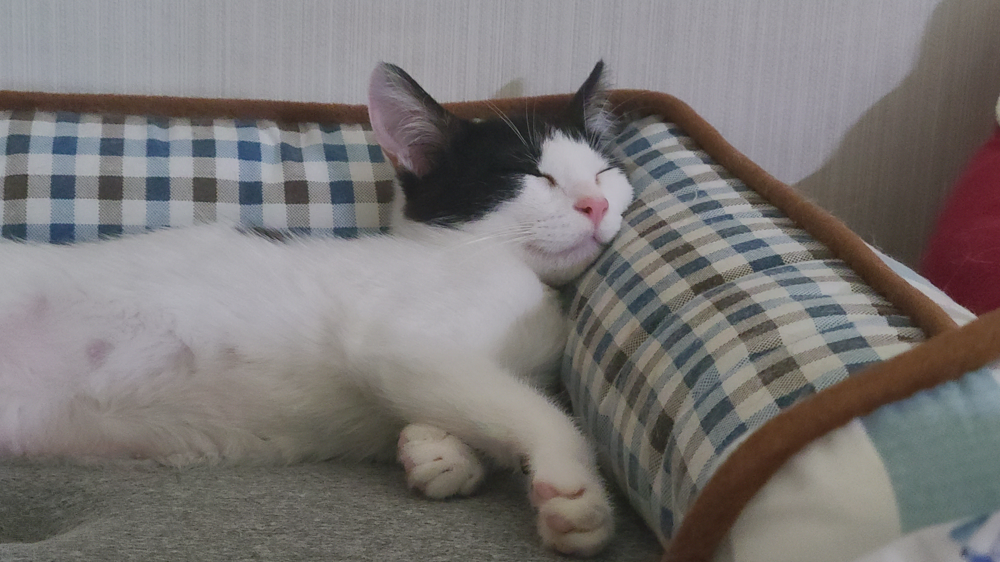

우리 예쁜 구름이는 젖소무늬를 가진 애교많고 앙증맞은 막둥이에요.
구름이를 소개하자면 첫만남이 굉장히 인상적이었던 그 날이 떠올라요.
당시에 자주 가던 국밥집에서 저녁식사를 마치고 집으로 돌아가는 길에 저 앞 사거리 도로변에
굉장히 자그마한 고양이 한마리가 지나가는 사람들과 무섭게 지나다니는 자동차들에 겁을먹고
날뛰듯이 도망치고 있었어요. 걱정되는 마음에 시야에서 사라졌던 길 모퉁이를 돌자
영락없는 아깽이의 목소리로 애타게 울고있었어요. 소리를 따라가니 주차 되어있는 자동차 밑이었어요.
차 밑을 들여다보니 차 바닥 틈으로 들어가버려서 모습을 볼 수는 없었어요. 그렇다고 함부로 손을 들이 밀거나
놀라게 만들면 자칫 다른 곳으로 도망가려다 차에 치이기라도 할까봐 이러지도 저러지도 못한 채
바닥에 웅크리고 모습이 보일 때까지 기다렸더니 머지않아 이 아이의 두 발이 땅에 내려와 닿았어요
그 순간을 놓치지 않고 바로 잡아채서 절대 놓치지 않기 위해 두 손으로 잘 감싸쥐어 품에 안았어요.
그 상황에 너무도 겁을 먹은 구름이는 제 손에서 벗어나기 위해 온갖 발악을 하며 제 손가락을
자신이 낼 수 있는 가장 센 힘으로 깨물고 날카로운 발톱을 드러내어 뛰쳐 나가려고 안간힘을 썼어요.
이대로 안고서는 동물병원까지 가는 것은 도저히 무리라고 생각한 저는 주변 식당에 들어가 작은 종이박스를
얻어서 그 안에 넣어 병원까지 갈 수 있었어요. 박스 안에서는 두려움이 줄어 들었는지 아주 얌전히 있어 주었어요
그렇게 병원에 들러 검사를 받고 우리 집으로 데려왔고 지금 아주 건강한 모습으로 함께 지내고 있답니다.
처음 그 사납던 모습은 전혀 없고 집사를 얼마나 잘 따르고 의지하는 아이인지 볼수록 애정이 가는 아이에요.
